Extensión
1.599,9 ha distribuidas en cuatro predios con identificación independiente.
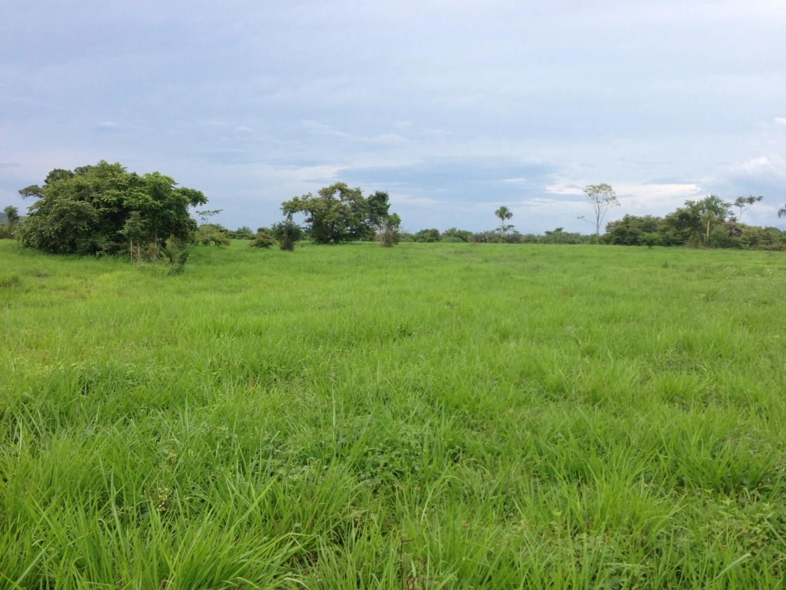
Rincón Hondo · Chiriguaná · Cesar
Cuatro predios con infraestructura ganadera existente y potencial agroproductivo en el corredor del Cesar.
Conocer el activo01 / La oportunidad
El Tigre, El Silencio, La Esperanza y El Porvenir / Mundo Ancho. Pastos mejorados, cercas e infraestructura de agua, con alternativas de desarrollo ganadero, agroforestal y energético.
1.599,9 ha distribuidas en cuatro predios con identificación independiente.
18 reservorios, 4 represas y 18 nacimientos. Pastos mejorados y divisiones internas.
Ganadería, sistemas silvopastoriles, palma y maderables; potencial solar sujeto a estudios.
02 / Los cuatro predios
Cuatro predios con identificación independiente y 1.599,9 hectáreas en total. Las superficies catastrales y de coberturas se detallan por separado en los planos.
01
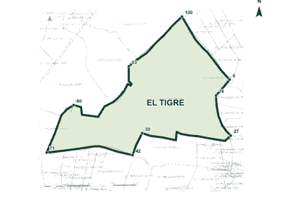
981,5 ha
Matrícula 192-6654
Ver planos02
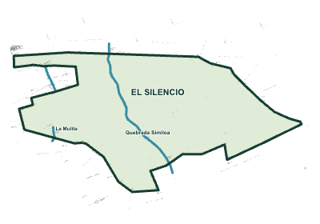
363,8 ha
Matrícula 192-30521-6
Ver planos03
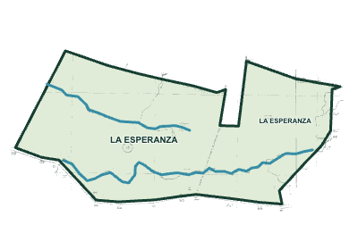
128,1 ha
Matrícula 192-1777
Ver plano04
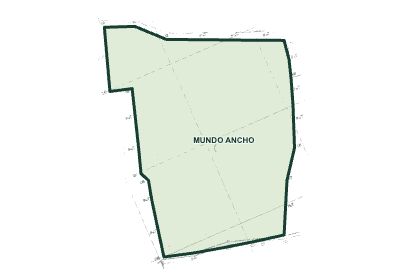
126,5 ha
Folio por confirmar
Ver planoTotal de referencia comercial: 1.599,9 ha. Las diferencias con los levantamientos técnicos se conservan visibles para su conciliación documental.
| Predio | Matrícula | Área | Agua e infraestructura |
|---|---|---|---|
| El Tigre | 192-6654 | 981,5 ha | 2 represas · 18 nacimientos · plano catastral 2024 (981 ha + 3.548 m²) |
| El Silencio | 192-30521-6 | 363,8 ha | 2 represas · caños Similoa y La Mulita |
| La Esperanza | 192-1777 | 128,1 ha | Reservorios: inventario consolidado del conjunto |
| El Porvenir (plano "Mundo Ancho") | 192-…61-30 | 126,5 ha | Reservorios: inventario consolidado del conjunto |
| Total bloque | 1.599,9 ha | 18 reservorios · 4 represas · 18 nacimientos |
03 / Agua e infraestructura
Pastos de braquiaria, angletón, guinea y decumbens. Perímetro en alambre de púas y divisiones internas con cerca eléctrica.
Inventario consolidado del conjunto. La distribución de reservorios por predio está pendiente de confirmación.
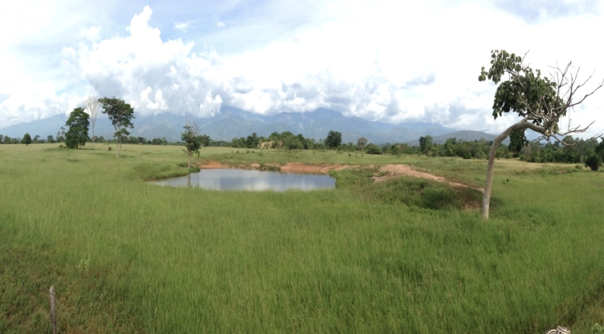
04 / Planos y ubicación
Rincón Hondo, municipio de Chiriguaná, Cesar. Cartografía de coberturas, planos prediales y ubicación documental del conjunto.
Mapa de coberturas
1.219,18 ha · base topográfica
Los mapas de coberturas reportan 1.219,18 ha en El Tigre y 348,70 ha en El Silencio. Estas superficies no reemplazan las áreas comerciales de 981,5 y 363,8 ha; las diferencias requieren conciliación documental.
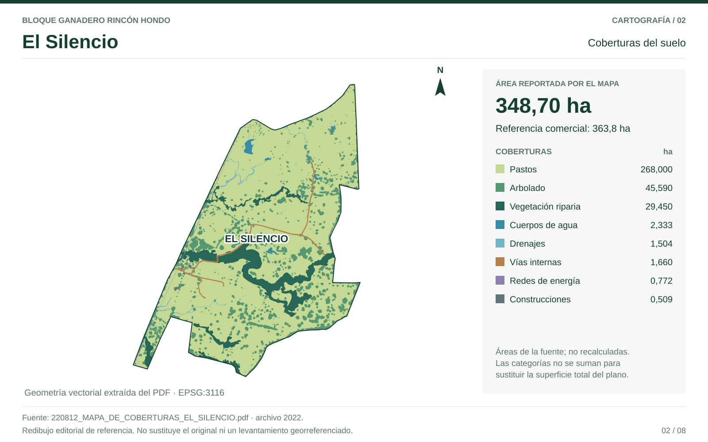
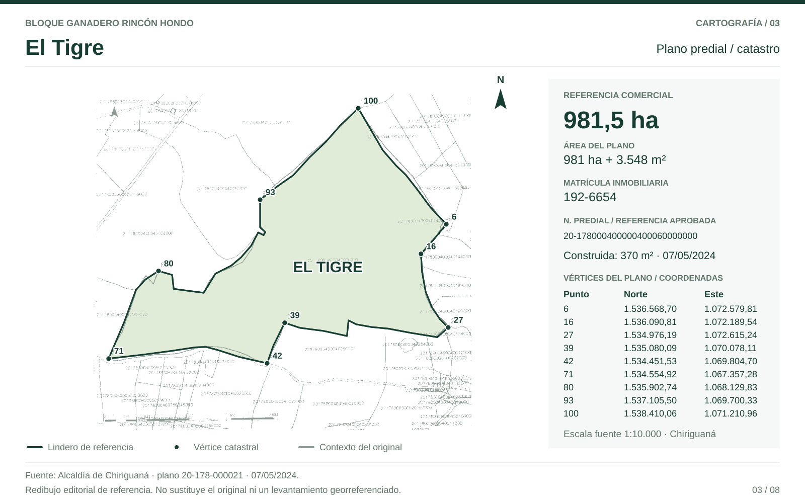
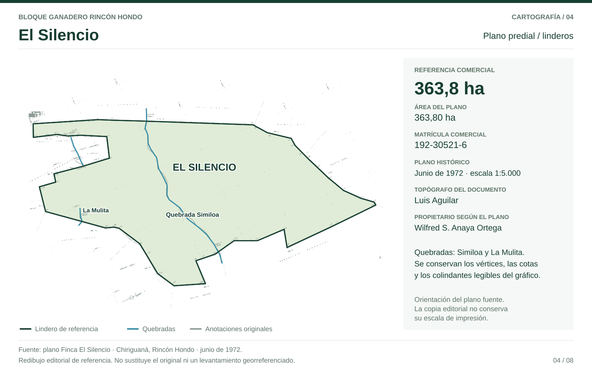
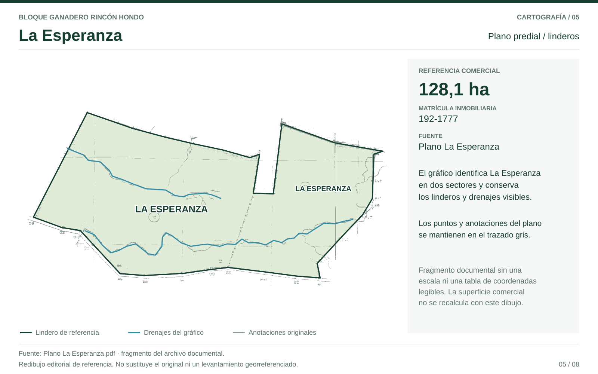
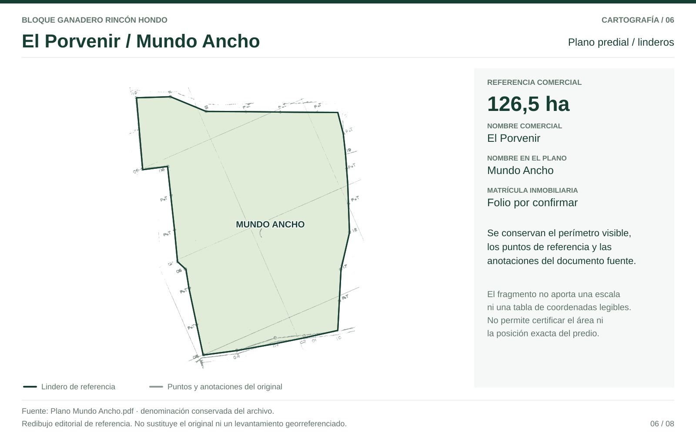
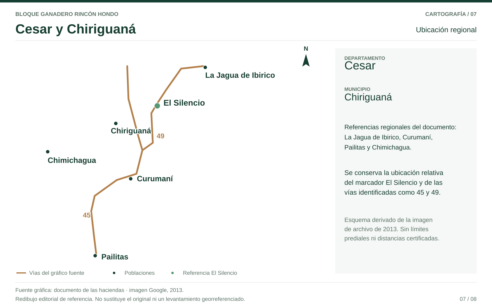
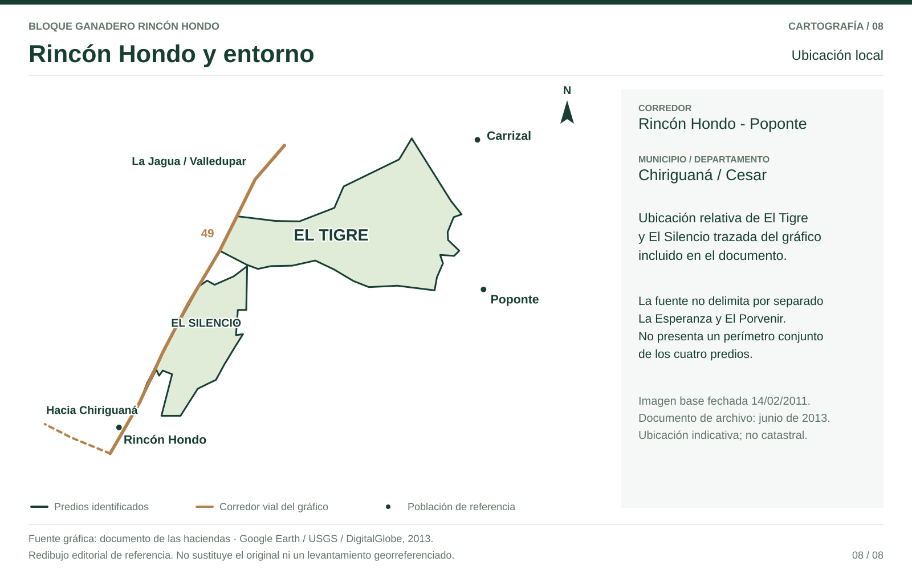
05 / Uso del suelo
Las coberturas y el reconocimiento técnico identifican alternativas de palma, sistemas agroforestales y maderables. La evaluación definitiva de aptitud requiere actualizar los estudios de suelos.
Pastos y arbolado combinados en El Tigre
Área productiva reportada en El Silencio
Precipitación media del registro quinquenal
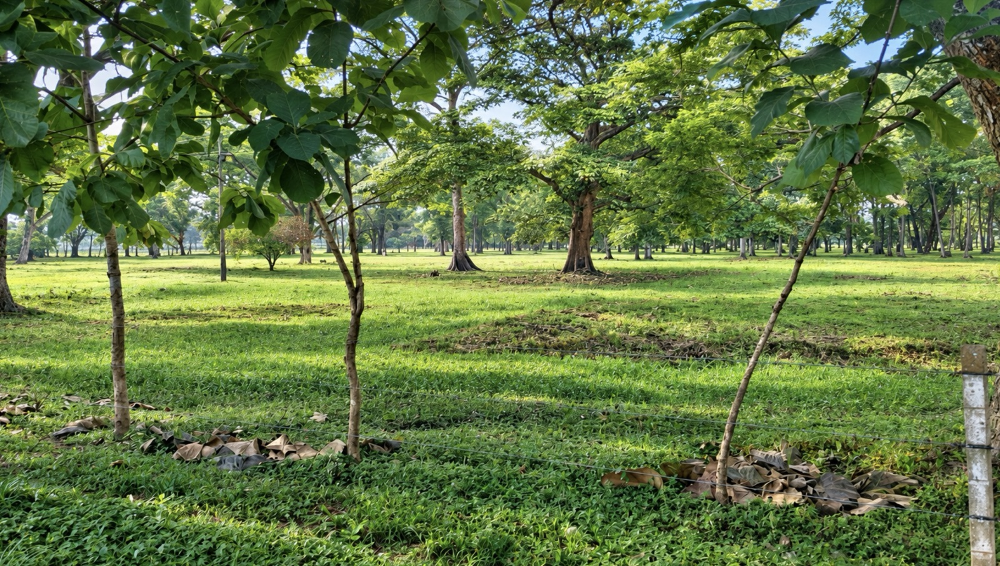
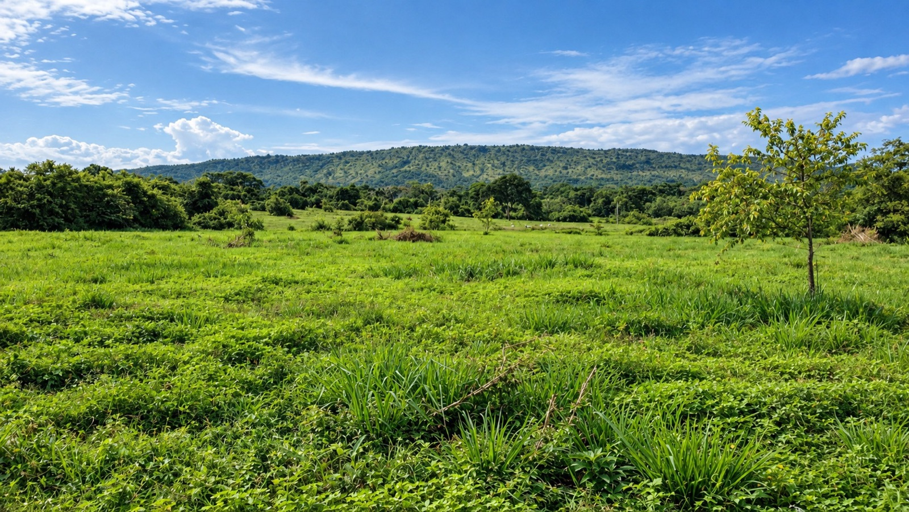
Fotografías identificadas en el documento de las haciendas · Junio de 2013.
Análisis de coberturas (mapas de coberturas) y reconocimiento técnico identifican vocaciones productivas adicionales a la ganadería, con especial potencial para palma de aceite en El Tigre y uso productivo inmediato en El Silencio.
| Finca | Área total (ha) | Área apta para palma / productiva | Rastrojo / pastos | Reserva / protección | Otros usos potenciales |
|---|---|---|---|---|---|
| El Tigre | 1.219,18 ha (topográfico; catastral: 981,5 ha) | ~565,7 ha pastos + 424,1 ha arbolado — gran parte apta para palma (~989,8 ha combinadas) | Incluye rastrojo alto | ~20 ha nacimientos + ~90 ha montaña no apta para palma | Maderables en zona de montaña |
| El Silencio | 348,70 ha (catastral: 363,8 ha) | ~330,7 ha (total menos 18 ha de reserva). Sin rastrojo — lista para uso productivo inmediato. | No presenta rastrojo | 18 ha (30 m lado y lado, caños Similoa y La Mulita) | — |
El registro pluviométrico de los últimos 5 años indica un promedio anual de 2.632 mm con distribución relativamente constante a lo largo del año. Este régimen hídrico es altamente favorable para:
06 / Contexto regional
Tradición ganadera, corredor férreo Fenoco, área de influencia de la Ruta del Sol y entorno de desarrollo agroindustrial y solar.
Cesar representa el 5,7% del inventario del país.5
Variación de abril de 2025 a abril de 2026.6
Contexto de la edición de junio de 2026. La Ruta del Sol se reporta en obra con retrasos; las alternativas agroindustriales y solares están sujetas a estudios.
La tesis no descansa en una sola obra. Descansa en una dotación de agua difícil de replicar sobre un corredor logístico consolidado (ferrocarril + vía troncal + río), en un departamento que se está reconvirtiendo del carbón hacia la energía solar y el agro. El terreno plano de piedemonte y la cercanía a líneas de transmisión hacen del bloque un candidato real para usos alternativos además de la ganadería.
07 / Referencias
Documento informativo; no constituye oferta de valores, asesoría de inversión ni garantía de rentabilidad. La verificación jurídica (estudio de títulos, RTDAF/URT), catastral y de linderos es condición previa a cualquier negocio.
{kind=link}